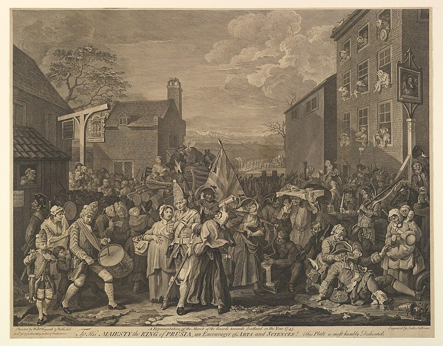
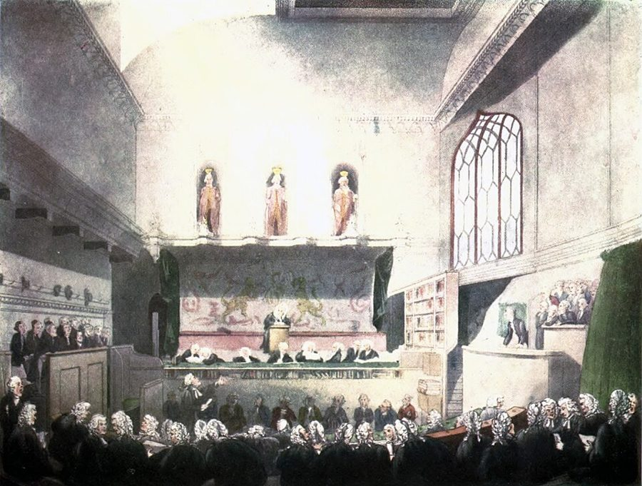

这一页在做什么
卷五开头，斯密从「君主该管什么」转到「这些事要花多少钱」。这一页是头两件：国防和司法。他借一套「社会的阶段」来讲：猎人打仗为什么不花君主一分钱，文明国家为什么非养一支常备军不可；政府和法官又为什么是跟着财产一起出现的。读的时候抓两条线：常备军和民兵谁强、军队会不会吞掉自由；第 56 段那句「政府保护富人对付穷人」，前后文到底在说什么。

他想证明什么
页 22 末尾，斯密给君主留了三项义务。卷五第 1 章挨个算这三笔账，这一页是头两笔。他要证明的其实只有一句话：社会越进步，国防和司法越贵，这钱省不得。证明的办法是一套社会的阶段。猎人人人是兵，打仗时照样自己打猎养活自己；牧人带着牛羊举族出征；种地的人在播种和收割之间打一仗，回家正好收庄稼。等到有了铁匠、木匠、织工，人一离开作坊就断了收入，仗又越打越久、越打越讲技术，国家只好花钱养专职的兵。中间一大段从马其顿讲到罗马，都是为了证明常备军总胜过民兵。司法这一半走的是同一条路：猎人没有值钱的东西，用不着法官；有了牛羊，才有贫富，才有政府。
读法：§6 先读，第 46 段和第 56 段一定要看。有空读 §2 打仗也要分工、§5 常备军和自由、§8 法官怎样拿钱和司法独立。§3、§4、§7 是军事史和司法史的细账，可以跳过。
打猎、放牧、种地、商业这四步，在斯密笔下像一架每个社会都要爬的梯子。今天的考古学和人类学不这样看，见「今天怎么看」。
斯密落在哪：国防和司法都随社会进步变贵。文明国家要靠常备军自保，军队握在和宪政利害一致的人手里就不危险。政府随财产而生，就保护财产这一面说，是有产者防无产者。法官要和行政分开，并尽量独立于它。
分节地图
这一页是卷五第 1 章的第一、二部分，本站切成 8 节。粗体是本站起的节名；「杨译里找」后面是杨译里这一节开头附近的小标题或第一句；灰色的英文是原文这一节开头的几个词。标「先读」的是最短读法。
- 猎人和牧人打仗不花钱第一部分 论国防支出THE first duty of the sovereign, …猎人、牧人、农夫打仗都不用君主出钱，有了手艺人、战事拖长以后才得发饷。第 5 段说牧人能聚起几十万人；第 11 段说现代欧洲至多百分之一的人能拿去当兵。
- 打仗也要分工但当战争变得更为复杂时，必须实行劳动分工，以使技术臻于完善The art of war, however, as …第 14 段：别的行当靠个人算计自然分出来，唯独当兵这一行要靠国家。第 15 段：越勤劳富裕的国家越招人来打。第 19 段给民兵和常备军下定义。
- 火药、纪律和民兵民兵在古代只是操练和编队Militias have been of several different …火器让纪律比武艺要紧，结论是常备军总胜过民兵。第 22 段写战场上看不见的死亡、第 27 段美洲民兵的预言值得一看，见故事；其余细节可以跳过。
- 从马其顿到罗马的常备军马其顿常备军挫败了希腊民兵One of the first standing armies …马其顿、汉尼拔、西庇阿、罗马帝国，一部浓缩的古代战争史，用来证明上一节的结论。故事好看，但论点在 §3 已经说完，可以跳过。
- 常备军与自由常备军在平时不丧失它的勇武The soldiers of a standing army, …第 39–40 段说文明靠常备军才保得住；第 41 段先认共和派的担心，再讲常备军在什么条件下不危险；第 44 段说火器有利于文明。
- 有了财产才有政府第二部分 论司法支出THE second duty of the sovereign, …全页的先读。第 46 段：有了值钱的财产才需要政府，富人的贪婪和穷人的好逸恶劳他都点了名。第 48–55 段讲人凭什么服人，第 56 段是那句名句。
- 司法曾是一门生意但司法权力长期以来是收入来源而不是支出原因The judicial authority of such a …审案起初是君主的财源，送礼和罚金带来腐败，后来改成法官拿固定薪水。一句话就能概括，可以跳过；第 60 段阿伽门农许七座城那句可以看看。
- 法官的报酬和司法独立司法的执行从来不是免费的Justice, however, never was in reality …第 64 段图卢兹的法官，第 65 段英格兰法院抢生意，两个故事都在下面。第 69 段讲司法为什么要独立于行政，不长，值得读完。
先用中文过一遍：这一页的概念
这一页用到的三个概念。讲的是概念本身；每块的「今天」说今天怎么看它。前面讲过的分工、天然自由的制度在这一页还会出现。
§1社会的四个阶段 nations of hunters, of shepherds, of husbandmen
18 世纪苏格兰和法国的学者常用的一套历史框架：照人靠什么吃饭，把社会分成打猎、放牧、种地、商业四个阶段，再说财产、法律、政府和打仗的样子，都跟着吃饭的办法变。斯密在格拉斯哥讲课时就讲这一套，同时代的法国人 Turgot、斯密的学生 John Millar 也用。这一章没有把四个阶段一一列全，第四阶段在书里就是有手艺人、有制造业的「文明社会」。要分清：这是一种推想出来的历史，从人性和生计推出社会大概会怎样演变，不是斯密拿出土的证据证明过的事。译本：「狩猎民族」、译本：「游牧民族」说的就是前两个阶段。
今天：「生计方式影响制度」这个思路留下来了；「每个社会都爬同一架梯子」早已没人坚持。考古学发现，放牧和种地在中东几乎同时起步，阶梯的次序未必是斯密排的那样。
在这一页：第 2–7 段用它解释打仗为什么原本不花钱，第 46–56 段用它解释政府从哪里来。第 51 段的鞑靼酋长，和页 15 的家臣是同一个道理。
§2常备军和民兵 standing army; militia
国家要防外敌，斯密说只有两条路（第 16–19 段）。一条是民兵：公民平时种地做工，定期操练，打仗时拿起枪；一条是常备军：国家出钱养一批人，当兵就是他们的职业，天天操练。区别在于这个人首先是工人还是首先是兵。斯密的理由是分工：打仗是一门越来越复杂的手艺，专职的总比兼职的强。可太平年月里，谁也不会自愿把大半时间花在练兵上，那不合他自己的利益，所以斯密说只有「国家的智慧」能把当兵变成一个专门的行当（第 14 段）。这是全书少见的一处：分工不是自己长出来的，得靠国家安排。
今天：多数富国靠职业军队，美国 1973 年改为全志愿兵役；也有瑞士、芬兰、以色列这样仍靠义务兵役或民兵的国家。斯密担心的军队和自由，今天叫军队的文官控制。
在这一页：第 19 段下定义，第 23–37 段证明常备军占上风，第 41 段讲它对自由的利弊。页 25 第 189 段接着说：人人有尚武精神，常备军就可以小些。
§8司法独立 the judicial … independent of the executive power
第 69 段说了两层。一层是分开：审案的人不是掌权办事的人。一层是独立：法官不能被行政随意撤换，薪水按时发，不看行政的脸色，也不随它的节省而变。理由是：管国家大事的人，就算不贪不坏，有时也会觉得为了大局可以牺牲某个人的权利；而每个人的自由和安全感，都系在公正的审判上。这不是斯密的新发明。英格兰 1701 年的《王位继承法》规定，等王位传到汉诺威家族之后，法官只要品行良好就可以一直任职，薪水由法律定下，罢免要议会两院共同提请；1714 年起生效。1760 年的法律又让法官的任命不再随国王去世而失效。斯密是在总结英国已有的制度。
今天：这已是宪政国家的通则。研究发现，法官事实上独立的国家经济增长更快，只在法条上写了独立的国家却看不出这种关系（Feld 和 Voigt 2003）。
在这一页：第 67 段说法院的经费不必经行政之手，第 68 段讲分开的来历，第 69 段讲为什么还要独立。
故事和背景
这一页里的故事和 18 世纪的东西，按在书里出现的顺序排。
§3一句押对的预言，一封不同意的信
第 27 段说，民兵只要在战场上连打几季，就会变得和常备军一模一样；接着一句：要是美洲的战事再拖一个作战季，美洲民兵就可能在各方面都抵得上英国的常备军。Cannan 注明，《国富论》1776 年 3 月初出版，这句话是战争爆发后不到一年写的；那场仗后来打了八年。斯密的老朋友、爱丁堡的哲学家 Adam Ferguson 读了书，1776 年 4 月给他写信：你得罪了教会、大学和商人，这些我站你这边；可你还得罪了民兵，这一点我必须反对你。两人都是爱丁堡扑克俱乐部的成员，这个俱乐部的宗旨就是争取让苏格兰建民兵；Ferguson 1756 年还写过一本小册子鼓吹民兵。一边是民兵能养成公民的勇气，一边是分工和效率，这场争论斯密在页 25 的第 189–190 段又接着说了几句。
§6鞑靼酋长和他的一千个人
第 51 段讲财富为什么在游牧社会最能使唤人。一个鞑靼酋长的牛羊每年多出来的部分，够养一千个人；草原上没有手工制品、没有小玩意儿可买，他只能拿这些多出来的东西养人。这一千个人全靠他吃饭，打仗听他的，平时也服他的判，他自然既是将军又是法官。换到文明社会，一个人的地产收成也许同样养得活上千人，可这些人吃他的东西都付了钱，没人觉得全靠他，所以他能使唤的不过几个仆人。这和页 15 领主拿家臣换钻石扣子是同一个道理。第 52 段还有一句俏皮话：家家户户都一样古老，王子的祖先不会比乞丐的多，所谓门第古老，说到底是有钱得早。
§8薪水抵不上一个男仆的法官
第 57 段说，早年的巡回法官其实是国王派下乡收钱的「流动代理商」。斯密说是亨利二世时的训令，Cannan 查了出处，是理查一世的。第 60 段斯密又说，荷马史诗里阿伽门农许给阿喀琉斯七座城，提到的唯一好处就是百姓会送礼；Cannan 也挑了错：史诗里提到的不止这一样。到了第 64 段，斯密拿法国作例子：图卢兹高等法院是全国排第二的高等法院，国王付给一位法官的净薪水，一年只有 150 利弗，约合 6 镑 11 先令，斯密写书时往前数大约七年，这在当地也就是一个男仆的年工钱。法官的收入主要靠诉讼费，按各人办案的勤惰分；勤快的过得舒服，懒的只拿那点薪水。斯密说这些法院也许不太方便，却从没被人指控过、甚至没被怀疑过腐败。他知道得这么细，是因为 1764 到 1765 年他在图卢兹住过一年多。
§8法院抢生意

第 65 段讲英格兰的法院原来也靠诉讼费过活，于是各自想办法把案子揽到自己这里来。王座法庭本来只审刑事案，原告就声称被告不给他公道，犯了某种侵害或轻罪，民事官司就进来了；财税法庭本来只管欠国王的债，原告就说：我还不上国王的钱，是因为被告不还我的钱。靠这些说法，打官司的人可以自己挑法院，各法院就比谁办得快、判得公道。斯密说，英格兰今天令人称道的法院体制，「也许」很大程度上就是这样比出来的。两百多年后，法律史学者 Daniel Klerman 2007 年的论文就以这段话开头，用数据检验了它，结论下面「今天怎么看」里说。
原典：斯密的原话
这本书是公版书，下面整段放斯密的原文，配本站的白话译。灰字说它在杨译的哪里，最后一行是这段里今天容易读错的 18 世纪词。
§5常备军什么时候不危险
第 41 段的前半，最能代表斯密「先认对方的理，再讲条件」的写法。杨译这里小标题错了位，这段排在常备军并非不利于自由这个小标题的前面。
Men of republican principles have been jealous of a standing army as dangerous to liberty. It certainly is so, wherever the interest of the general and that of the principal officers are not necessarily connected with the support of the constitution of the state. The standing army of Cæsar destroyed the Roman republic. The standing army of Cromwel turned the long parliament out of doors. But where the sovereign is himself the general, and the principal nobility and gentry of the country the chief officers of the army; where the military force is placed under the command of those who have the greatest interest in the support of the civil authority, because they have themselves the greatest share of that authority, a standing army can never be dangerous to liberty. On the contrary, it may in some cases be favourable to liberty. The security which it gives to the sovereign renders unnecessary that troublesome jealousy, which, in some modern republics, seems to watch over the minutest actions, and to be at all times ready to disturb the peace of every citizen.
本站译：信奉共和原则的人一向提防常备军，认为它危及自由。凡是将军和主要军官的利益，并不必然系于维护国家宪制的地方，它确实危险。恺撒的常备军毁了罗马共和国；克伦威尔的常备军把长期议会撵出了门。可是，如果君主本人就是统帅，国内的大贵族和士绅就是军中的主要军官；如果兵权交给了那些最有理由拥护政府权威的人，因为他们自己就握着这份权威的最大一块，那么常备军就绝不会危及自由。反过来，在某些情况下它还可能有利于自由。它给了君主安全感，君主就用不着那种烦人的猜疑心了。在一些现代共和国里，这种猜疑似乎连最小的举动都要盯着，随时准备去搅扰每个公民的安宁。
常被缩成「斯密认为常备军有利于自由」。原文有两道条件：军官的利益要系在宪制上；有利于自由只是「在某些情况下」。他的意思是：君主坐得稳，才容得下百姓放肆的抗议。
- jealous提防、戒备，不是嫉妒；jealousy 是猜疑心
- republican principles共和派的主张，在英国指警惕王权和常备军的那一路人
- civil authority文治的权威，即政府，和军队相对
§6一个富人，五百个穷人
第 46 段的后半。这段两边都不客气，最怕只引一半。在杨译司法支出在不同的时期有所不同这个小标题下面，那一大段的后半。
But avarice and ambition in the rich, in the poor the hatred of labour and the love of present ease and enjoyment, are the passions which prompt to invade property, passions much more steady in their operation, and much more universal in their influence. Wherever there is great property, there is great inequality. For one very rich man, there must be at least five hundred poor, and the affluence of the few supposes the indigence of the many. The affluence of the rich excites the indignation of the poor, who are often both driven by want, and prompted by envy, to invade his possessions. It is only under the shelter of the civil magistrate that the owner of that valuable property, which is acquired by the labour of many years, or perhaps of many successive generations, can sleep a single night in security. … The acquisition of valuable and extensive property, therefore, necessarily requires the establishment of civil government. Where there is no property, or at least none that exceeds the value of two or three days labour, civil government is not so necessary.
本站译：可是，富人的贪婪和野心，穷人的厌恶劳动、贪图眼前的安逸和享乐，这些才是叫人去侵犯财产的激情；它们起作用起得持久得多，影响也普遍得多。哪里有大财产，哪里就有大不平等。有一个大富翁，就至少得有五百个穷人；少数人的富足，以多数人的贫困为前提。富人的富足惹得穷人愤愤不平，穷人常常既被贫困逼着、又被嫉妒撺掇着，去抢他的东西。一份值钱的家业，是许多年、也许是好几代人的劳动攒下的，它的主人只有躲在官府的庇护下，才睡得了一夜安稳觉。……所以，一旦有了值钱又大宗的财产，就必然要设立政府。没有财产、或者财产至多值两三天劳动的地方，政府就没那么必要。
前半段斯密说，伤人身体和名誉的嫉妒、恶意、怨恨，大多数人只偶尔才有；动财产的激情才是天天在起作用的。富人的贪婪排在第一个，穷人的懒和嫉妒也没放过。
- civil magistrate行使治权的官员，泛指官府，不是今天的治安法官
- civil government政府（相对于没有政府的状态），不是「民事」的意思
- indigence贫困
§6就保护财产而言
第 56 段，全书最常被断章取义的句子之一，这里连着它前面讲游牧社会的几句。在杨译在牧人中，财产的不平等产生了，并引进了民事政府这个小标题下面。
It is in the age of shepherds, in the second period of society, that the inequality of fortune first begins to take place, and introduces among men a degree of authority and subordination which could not possibly exist before. It thereby introduces some degree of that civil government which is indispensably necessary for its own preservation: and it seems to do this naturally, and even independent of the consideration of that necessity. … The rich, in particular, are necessarily interested to support that order of things, which can alone secure them in the possession of their own advantages. Men of inferior wealth combine to defend those of superior wealth in the possession of their property, in order that men of superior wealth may combine to defend them in the possession of theirs. … Civil government, so far as it is instituted for the security of property, is in reality instituted for the defence of the rich against the poor, or of those who have some property against those who have none at all.
本站译：到了牧人的时代，也就是社会的第二个时期，贫富才开始分化，在人与人之间带来了以前不可能有的权威和服从。这样一来，它也带来了某种程度的政府，而贫富之分要维持下去，少不了这个政府。它似乎是自然而然地做到这一点的，甚至不用谁先想到非这样不可。……尤其是富人，必然愿意撑住这套秩序，因为只有它能保住他们已有的好处。家当少些的人联起手来，替家当多的人守住财产，好让家当多的人也联起手来，替他们守住他们的那一份。……政府，就它是为保障财产而设的这一面说，实际上是为了保护富人、防备穷人而设的，或者说，是为了保护有些财产的人、防备一无所有的人而设的。
三个限定要留住：说的是游牧时代政府怎样起源；「似乎」自然而然；最后一句只说「就保障财产这一面」。中间那句也要看：小牧人帮大牧人守财产，是为了让大牧人也帮他们守。
- subordination服从、上下之分，不是「下属」
- fortune财产、家当，不是运气
译本勘误
杨译这一页整体可靠。下面只收会把人读歪的两处，都在常备军那一节。灰字是英文原文那一处的几个词；方框里是杨译的原句，在电子书里搜它。
§5俄国从那以后一直安定，不是「从来没有」译反
which that empire has ever since enjoyed
译本：「那个帝国从来没有享有过的秩序和国内和平」
ever since 是「从那以后一直」。原文说，俄国自彼得大帝以来一直享有的那份秩序和国内太平，全靠这支常备军。读成「从来没有」，整句就不通了，也把斯密对彼得大帝的评价说反了。
§5共和派是提防常备军，不是嫉妒它误译
have been jealous of a standing army
译本：「信仰共和主义的人妒忌常备军」
18 世纪的 jealous of 常作「提防、戒备」讲。原文说共和派一向提防常备军，怕它危及自由；同段后面的 jealousy 也是猜疑心。读成「妒忌」，像是共和派眼红军队，整段的争论就看不明白了。
今天怎么看
这一章的主要说法和今天的判断。每条标签判的是那条论点，五种标签的意思：
- 成立今天的经济学和证据支持这句话。
- 部分成立大方向对，细节或适用范围要改。
- 过时说的是 18 世纪的世界，当时也许对，今天的制度和技术已经变了。
- 被推翻后来的经济学或证据说明它错了。
- 有争议经济学界至今没有定论，两边各有代表性的研究。
社会从打猎、放牧走到种地、商业，打仗的花费一步步落到国家头上
今天看，后半句对：分工越细、武器越贵，军费就越得由国家出。前半句的梯子不对：考古学家多认为驯养牲畜和种地在中东几乎同时起步，专靠放牧、逐水草而居多半是农业站稳以后才分出去的（Lees 和 Bates 1974）；Graeber 和 Wengrow 2021 年的《人类新史》更直接批评 Turgot、斯密这一路的阶段论。
§1 第 2–13 段训练有素的常备军胜过任何民兵；火器让富国占上风，有利于文明的延续和扩张
前一半大体成立，第 27 段斯密自己也说，民兵连打几季就成了常备军。后一半说过了头（火器那句，Cannan 注明 Hume 先说过类似的话）：Arreguín-Toft 统计 1800–2003 年两百场强弱悬殊的战争，弱的一方赢了约 28%，1950 年以后赢了一半以上。
§3 第 23 段，§5 第 39、44 段政府随值钱的财产而生；就保护财产而言，它保护有产者、防备无产者
斯密讲的是游牧时代政府怎样起源，限定在「就保护财产这一面」。今天看，保护产权确是国家的一大用处，财产越多越需要法院和警察；但国家的来历还有打仗、宗教等多种解释，今天的政府也拿税收补贴穷人。理由见下面的看法块。
§6 第 46、56 段司法要和行政分开，并尽量独立于行政
法官不能被行政随意撤换，薪水不看行政的脸色。今天看，这是宪政国家的通则；Feld 和 Voigt 2003 年比较各国，发现法官事实上独立的国家人均收入增长更快，只写在法条上的独立看不出效果。
§8 第 69 段书里的说法：法官的收入可以来自规定好的诉讼费，结案后按勤惰分配，这样不会腐败，还能让法院更勤快
- 书里
- 第 64 段，用的是 seems、might：这样做「似乎」不比禁止收费更易腐败。第 65 段说英格兰法院抢生意「也许」造就了好体制；第 66 段他自己也看到，按程序收印花税会诱使法官把程序越弄越多。
- 当时
- 英格兰的法官除了薪水，大半收入来自诉讼费，原告可以在几个法院之间挑。
- 今天
- 勤快的那一半有证据，代价也有证据。Klerman 2007 年的论文认为，法院为了招揽原告，把法律往有利于原告那边推；1799 年和 1825 年英国立法把诉讼费从法官手里拿走，他比较前后的判决，统计结果和这个推断相符。美国也有现代版本：得克萨斯州东区联邦法院一度用对专利原告友好的程序招来大量专利官司，2017 年最高法院的 TC Heartland 案收紧了专利诉讼能去哪里打。今天多数国家由财政养法院。核对于 2026-10。依据：Klerman, Jurisdictional Competition and the Evolution of the Common Law, University of Chicago Law Review, 2007；Klerman & Reilly, Forum Selling, Southern California Law Review, 2016。
「政府是为保护富人对付穷人而设」：斯密在揭露还是在辩护
主流看法：这句话常被两边各取一半：一边拿它说，连斯密都承认国家是有钱人的工具；另一边拿它说，斯密把保护产权当政府的头号任务。
斯密的看法：第 46 段：没有财产，就不怎么需要政府；有了值钱的财产才需要。第 56 段：在游牧社会，贫富先出现，政府「似乎」自然跟着出现，小牧人帮大牧人守财产，换大牧人帮他们守。最后一句限定在「就保障财产这一面」。Cannan 注明，他在格拉斯哥讲课时说得更直白，也接着洛克：政府的目的就是保护财产。
本站的评论：这是一段描述，不是口号。斯密在讲一个机制：财产不平等了，才需要有人来守，守的那一方自然是有东西可守的人。他对富人的贪婪、穷人的懒惰都直说，不替任何一边说好话。读这句时把它放回游牧社会的牛羊里，就不会被哪一派拿去当招牌。今天的国家除了守财产，还收税办学校、发救济，这一句只说中了政府的一面。
本站的总体看法：§6 一定要读，第 46 和 56 段是全书最常被断章取义的地方，读原文最能看清。常备军那几节今天看过了时，读的时候留意他怎样先认对方的理再讲条件。§8 的法官和法院是这一页最好玩的地方，斯密的「也许」后来真有人拿数据检验过。
精彩回顾
隔几周回来时看这里。想不起来，点节号回到那一节。
一句话：社会越进步，国防和司法越贵；常备军要握在可靠的人手里，法官要独立于掌权的人。
斯密说常备军总胜过民兵。老朋友 Ferguson 来信：你得罪教会、大学、商人，我都站你这边；得罪民兵，我反对你。
§3第 46 段：富人的贪婪和穷人的懒惰都会侵犯财产，有大财产的人只有在官府庇护下才睡得安稳。第 56 段那句名句，限定在「就保护财产而言」。
§6图卢兹的法官一年薪水 150 利弗，抵一个男仆的工钱，收入靠按勤惰分的诉讼费，从没被怀疑腐败。
§8英格兰的法院靠诉讼费过活，就编出各种说法把案子揽过来。斯密说这也许造就了好体制；后来的研究发现，它也让法律偏向了原告。
§8